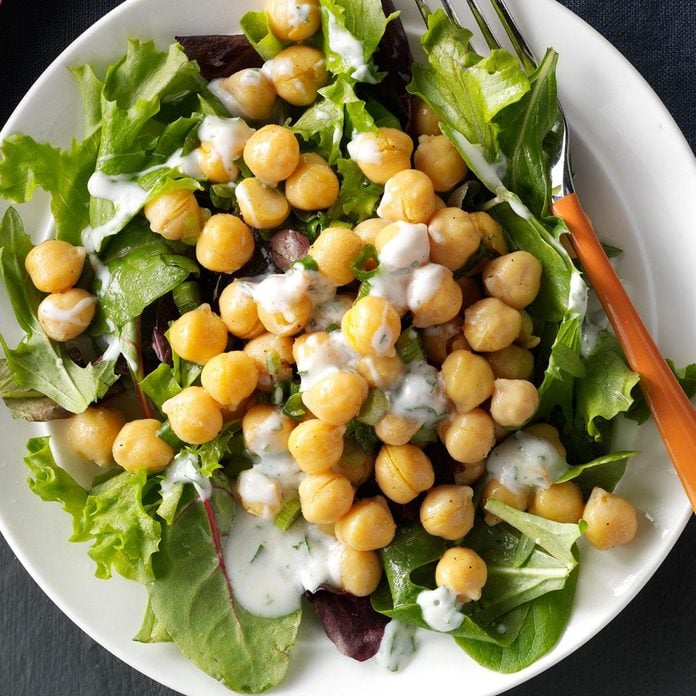

Lemony Garbanzo Salad

Description
A simple salad recipe with chickpeas and lemon
Ingredients
1/4 cup olive oil
3 tbsp lemon juice
3/4 tsp ground cumin
1/4 tsp salt
1/4 tsp ground coriander
1/4 tsp pepper
2 cans chickpeas, rinsed and drained
3 green onions, chopped
1/2 cup plain yoghurt
1 tbsp minced parsley
1 tbsp orange marmalade
4 cups spring mix salad greens
Steps
In a large bowl, whisk together first 6 ingredients; stir in beans and green onions. In another bowl, mix yogurt, parsley and marmalade.
To serve, divide greens among 4 plates; top with bean mixture. Serve with yogurt sauce.
Original source: